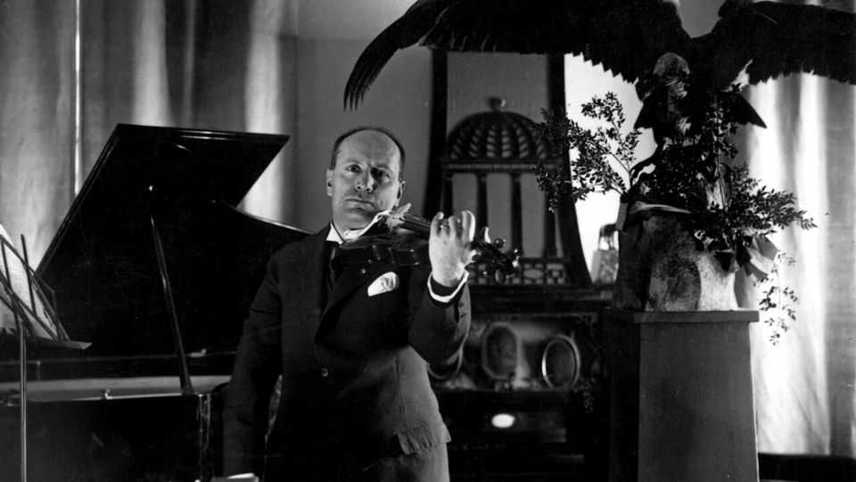

Britain’s elite may soon become harder to spot
“Who’s Who”, a reference book that tracks them, is being sold

Oct 22nd 2026
“THATCHER, Baroness” liked “music, reading”. “CHAMBERLAIN, Col. Sir Neville”, as an earlier volume of “Who’s Who” recorded, enjoyed “shooting”. “STALIN, Joseph” and “HITLER, Adolf” did not deign to send in their recreations (unlike “MUSSOLINI, Benito”, who liked “violin, horse-riding, fencing”). “CHURCHILL, Rt. Hon. Winston” did not find time to record his, either. After war broke out, though, he did find time to personally intervene and ensure that “Who’s Who” would still be printed despite paper shortages. It was, he considered, of “national importance”.
And it used to be. First published in 1849, “Who’s Who” is the world’s oldest biographical reference annual, one of its most influential and, arguably, its oddest. Its pillar-box red volumes were conceived to catalogue a certain sort of British elite and the occasional foreigner (the first entry listed in 1849 was “our Beloved SOVEREIGN”, Queen Victoria). But its influence, much like that of its elite, spread, and soon it had colonised other realms. “Who’s Who” was followed by “Wer ist wer?” for Germany, “Hvem er hvem?” for Norway and even “Who Was Who” for the afterlife. Leon Trotsky was included in the 1938 "Who’s Who”. In the current edition John McDonnell, a former Labour MP, lists his recreations as “fermenting the overthrow of capitalism”—with spelling, evidently, being less of an enthusiasm.
Now Bloomsbury, which publishes “Who’s Who”, has announced that it is selling it. It is uncertain who the buyer will be, or indeed whether it will continue to be printed. This matters. “Who’s Who” has lasted for so long, and gathered so much data—179 editions and over 125,000 entries—that it offers less mere anthology than anthropology. Past editions provide an unrivalled data source on that elusive species, the English elite. They list everything from habitats (each entry gives “Address” and “Clubs”) to hobbies (“Recreations” were added in 1897) and even elite humour: the comedian John Cleese listed his pastimes as “gluttony, sloth”.
How the “Who” are selected is complicated. Broadly speaking, entrants are split into two categories. One is bigwigs you mostly haven’t heard of (MPs, KCs, judges, peers, other types who wear tights), who gain automatic admission by virtue of their roles. The other is bigwigs you may know (actors, writers, business figures), whose entry is voted on by a board of advisers. Though quite who chooses the choosers is unclear: to stop bribery and corruption it is, says Sam Friedman, a professor of sociology at the LSE, “shrouded in secrecy”.
Its outcomes, by contrast, are illuminating. The elite of “Who’s Who” are, as Professor Friedman has shown, notably more male (over 80% are men) and pale (almost 97% are white) than Britain as a whole. They are also more likely to live in London (almost 36%, versus 13% for the average Briton), more likely to be privately educated (47% versus 6%) and far likelier to have gone to Oxbridge (35% versus 1%). Who is who in Britain feels rather similar to who was who—and both are largely who you would expect. In the 1850s a quarter of entrants listed “hunting” as a hobby. One later one liked hunting “tusker elephants” and another “hunting the Philistines”.
What for socialists is cause for handwringing is, for historians, cause for celebration. Such an archive is “absolute gold dust”, says Sir Tristram Hunt, director of the V&A museum. Even in an era of online oversharing “Who’s Who”, in its longevity, comparability and sheer triviality, offers the historian information that he says is “very, very hard to find elsewhere”. (Such as, perhaps, the fact that “HUNT, Tristram” enjoys “fresh-water swimming, ceramics [and] book-browsing”.) Some of the most telling details are incidental. Early volumes have telegram addresses, car number plates and a habit of referring to female writers as “authoress”.
Best of all it is still in print, for its volumes speak volumes. Whereas written history is, says Sir Tristram, “as much about the present as the past”, “Who’s Who” offers a yesterday unmediated by today. Open the 1938 volume and those entries—“HITLER, Adolf”, “STALIN, Joseph”, “CHURCHILL, Winston”—feel eerie in their unknowing; a cast list for a play that is yet to be played whose ending is yet to be written.
“Who’s Who” can feel like a monument to an unchanging elite. But it shows Britain’s elites are changing: fewer list hunting as a hobby; now they like pets and displaying an awkward irreverence towards things like “Who’s Who”. (Several list “sex” as a recreation.) They are, probably, less likely to display a copy of “Who’s Who” at home. Britain’s elite will not disappear but it may, thinks Professor Friedman, be harder to spot if this “important window” is lost.
Like most monuments to magnificence, however, “Who’s Who” is also an Ozymandias-like monument to obsolescence. Pick up an old volume today and what strikes you most is not the entrants’ authority but their anonymity. Hitlers, Stalins and Churchills aside, you will hardly have heard of any of them. ■